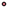

<!doctype html>
<html lang="en">
    <head>
        <meta charset="utf-8">
        <meta http-equiv="X-UA-Compatible" content="IE=edge">
        <meta name="viewport" content="initial-scale=1,user-scalable=no,maximum-scale=1,width=device-width">
        <meta name="mobile-web-app-capable" content="yes">
        <meta name="apple-mobile-web-app-capable" content="yes">
        <link rel="stylesheet" href="css/leaflet.css">
        <link rel="stylesheet" href="css/qgis2web.css">
        <link rel="stylesheet" href="css/Control.OSMGeocoder.css">
        <style>
        html, body, #map {
            width: 100%;
            height: 100%;
            padding: 0;
            margin: 0;
        }
        </style>
        <title>World Airports</title>
    </head>
    <body>
        <div id="map">
        </div>
        <script src="js/qgis2web_expressions.js"></script>
        <script src="js/leaflet.js"></script>
        <script src="js/leaflet.rotatedMarker.js"></script>
        <script src="js/leaflet.pattern.js"></script>
        <script src="js/leaflet-hash.js"></script>
        <script src="js/Autolinker.min.js"></script>
        <script src="js/rbush.min.js"></script>
        <script src="js/labelgun.min.js"></script>
        <script src="js/labels.js"></script>
        <script src="js/Control.OSMGeocoder.js"></script>
        <script src="data/ne_10m_airports_0.js"></script>
        <script>
        var highlightLayer;
        function highlightFeature(e) {
            highlightLayer = e.target;

            if (e.target.feature.geometry.type === 'LineString') {
              highlightLayer.setStyle({
                color: '#ffff00',
              });
            } else {
              highlightLayer.setStyle({
                fillColor: '#ffff00',
                fillOpacity: 1
              });
            }
            highlightLayer.openPopup();
        }
        var map = L.map('map', {
            zoomControl:true, maxZoom:28, minZoom:1
        }).fitBounds([[-109.248239954,-176.781841277],[118.947873002,195.265789597]]);
        var hash = new L.Hash(map);
        map.attributionControl.addAttribution('<a href="https://github.com/tomchadwin/qgis2web" target="_blank">qgis2web</a>');
        var bounds_group = new L.featureGroup([]);
        var basemap0 = L.tileLayer('http://{s}.www.toolserver.org/tiles/bw-mapnik/{z}/{x}/{y}.png', {
            attribution: '&copy; <a href="http://openstreetmap.org">OpenStreetMap</a> contributors, <a href="http://creativecommons.org/licenses/by-sa/2.0/">CC-BY-SA</a>',
            maxZoom: 28
        });
        basemap0.addTo(map);
        function setBounds() {
        }
        function pop_ne_10m_airports_0(feature, layer) {
            layer.on({
                mouseout: function(e) {
                    for (i in e.target._eventParents) {
                        e.target._eventParents[i].resetStyle(e.target);
                    }
                    if (typeof layer.closePopup == 'function') {
                        layer.closePopup();
                    } else {
                        layer.eachLayer(function(feature){
                            feature.closePopup()
                        });
                    }
                },
                mouseover: highlightFeature,
            });
            var popupContent = '<table>\
                    <tr>\
                        <td colspan="2">' + (feature.properties['NAME'] !== null ? Autolinker.link(String(feature.properties['NAME'])) : '') + '</td>\
                    </tr>\
                    <tr>\
                        <td colspan="2">' + (feature.properties['IATA_CODE'] !== null ? Autolinker.link(String(feature.properties['IATA_CODE'])) : '') + '</td>\
                    </tr>\
                    <tr>\
                        <td colspan="2">' + (feature.properties['Type'] !== null ? Autolinker.link(String(feature.properties['Type'])) : '') + '</td>\
                    </tr>\
                </table>';
            layer.bindPopup(popupContent, {maxHeight: 400});
        }

        function style_ne_10m_airports_0_0(feature) {
            switch(String(feature.properties['Type'])) {
                case 'Major Airport':
                    return {
                pane: 'pane_ne_10m_airports_0',
                radius: 6.0,
                opacity: 1,
                color: 'rgba(0,0,0,1.0)',
                dashArray: '',
                lineCap: 'butt',
                lineJoin: 'miter',
                weight: 1,
                fill: true,
                fillOpacity: 1,
                fillColor: 'rgba(29,205,188,1.0)',
            }
                    break;
                case 'Mid Airport':
                    return {
                pane: 'pane_ne_10m_airports_0',
                radius: 4.0,
                opacity: 1,
                color: 'rgba(0,0,0,1.0)',
                dashArray: '',
                lineCap: 'butt',
                lineJoin: 'miter',
                weight: 1,
                fill: true,
                fillOpacity: 1,
                fillColor: 'rgba(65,141,211,1.0)',
            }
                    break;
                case 'Small Airport':
                    return {
                pane: 'pane_ne_10m_airports_0',
                radius: 2.0,
                opacity: 1,
                color: 'rgba(0,0,0,1.0)',
                dashArray: '',
                lineCap: 'butt',
                lineJoin: 'miter',
                weight: 1,
                fill: true,
                fillOpacity: 1,
                fillColor: 'rgba(208,110,122,1.0)',
            }
                    break;
            }
        }
        map.createPane('pane_ne_10m_airports_0');
        map.getPane('pane_ne_10m_airports_0').style.zIndex = 400;
        map.getPane('pane_ne_10m_airports_0').style['mix-blend-mode'] = 'normal';
        var layer_ne_10m_airports_0 = new L.geoJson(json_ne_10m_airports_0, {
            attribution: '<a href=""></a>',
            pane: 'pane_ne_10m_airports_0',
            onEachFeature: pop_ne_10m_airports_0,
            pointToLayer: function (feature, latlng) {
                var context = {
                    feature: feature,
                    variables: {}
                };
                return L.circleMarker(latlng, style_ne_10m_airports_0_0(feature));
            },
        });
        bounds_group.addLayer(layer_ne_10m_airports_0);
        map.addLayer(layer_ne_10m_airports_0);
        var title = new L.Control();
        title.onAdd = function (map) {
            this._div = L.DomUtil.create('div', 'info');
            this.update();
            return this._div;
        };
        title.update = function () {
            this._div.innerHTML = '<h2>World Airports</h2>';
        };
        title.addTo(map);
        var osmGeocoder = new L.Control.OSMGeocoder({
            collapsed: false,
            position: 'topright',
            text: 'Search',
        });
        osmGeocoder.addTo(map);
        var baseMaps = {};
        L.control.layers(baseMaps,{'ne_10m_airports<br /><table><tr><td style="text-align: center;"></td><td>Major Airport</td></tr><tr><td style="text-align: center;"></td><td>Mid Airport</td></tr><tr><td style="text-align: center;"></td><td>Small Airport</td></tr></table>': layer_ne_10m_airports_0,},{collapsed:false}).addTo(map);
        map.on("zoomend", function(){

            if (map.hasLayer(layer_ne_10m_airports_0)) {
                if (map.getZoom() <= 19 && map.getZoom() >= 5) {
                    layer_ne_10m_airports_0.eachLayer(function (layer) {
                        layer.openTooltip();
                    });
                } else {
                    layer_ne_10m_airports_0.eachLayer(function (layer) {
                        layer.closeTooltip();
                    });
                }
            }
        });
        setBounds();
        var i = 0;
        layer_ne_10m_airports_0.eachLayer(function(layer) {
            var context = {
                feature: layer.feature,
                variables: {}
            };
            layer.bindTooltip((layer.feature.properties['IATA_CODE'] !== null?String('<div style="color: #000000; font-size: 8pt; font-family: \'MS Shell Dlg 2\', sans-serif;">' + layer.feature.properties['IATA_CODE']) + '</div>':''), {permanent: true, offset: [-0, -16], className: 'css_ne_10m_airports_0'});
            labels.push(layer);
            totalMarkers += 1;
              layer.added = true;
              addLabel(layer, i);
              i++;
        });
            if (map.hasLayer(layer_ne_10m_airports_0)) {
                if (map.getZoom() <= 19 && map.getZoom() >= 5) {
                    layer_ne_10m_airports_0.eachLayer(function (layer) {
                        layer.openTooltip();
                    });
                } else {
                    layer_ne_10m_airports_0.eachLayer(function (layer) {
                        layer.closeTooltip();
                    });
                }
            }
        resetLabels([layer_ne10mairports_0]);
        map.on("zoomend", function(){
            resetLabels([layer_ne10mairports_0]);
        });
        map.on("layeradd", function(){
            resetLabels([layer_ne10mairports_0]);
        });
        map.on("layerremove", function(){
            resetLabels([layer_ne10mairports_0]);
        });
        </script>
    </body>
</html>
